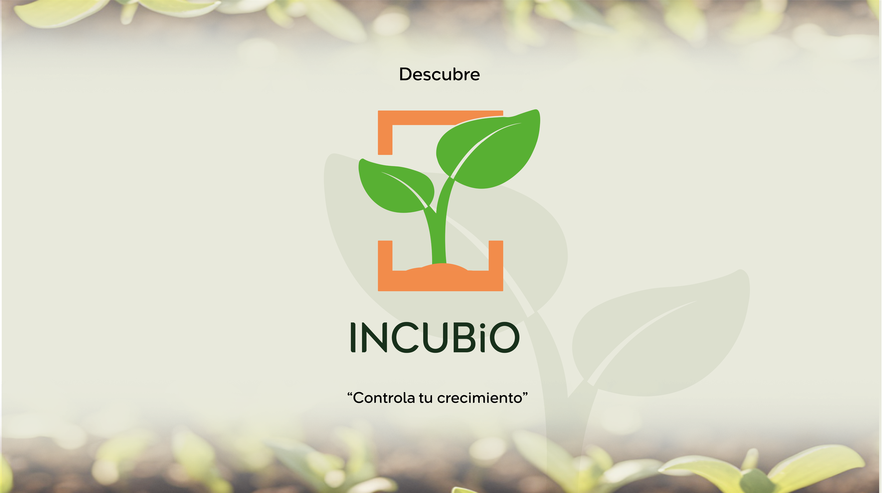
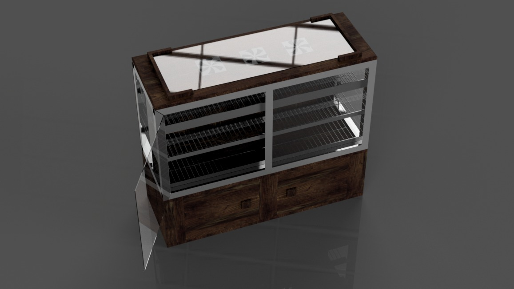
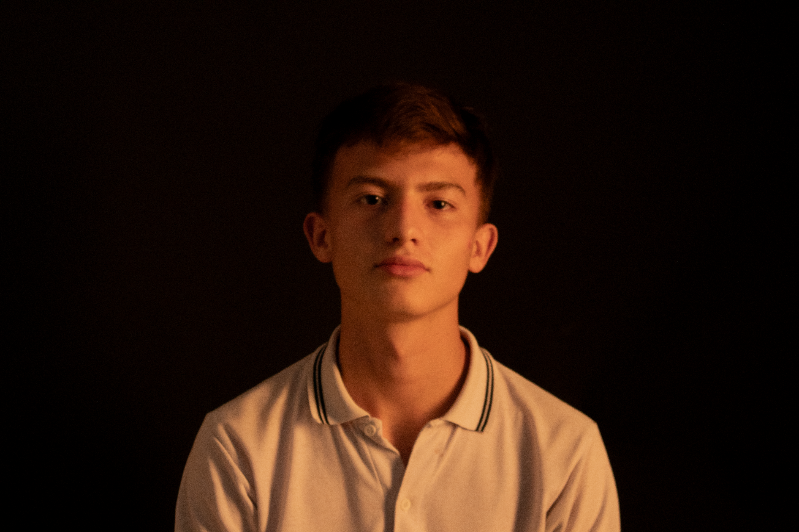
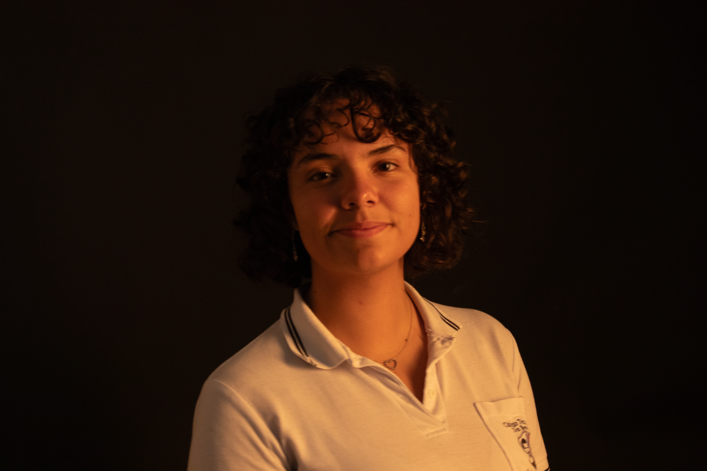
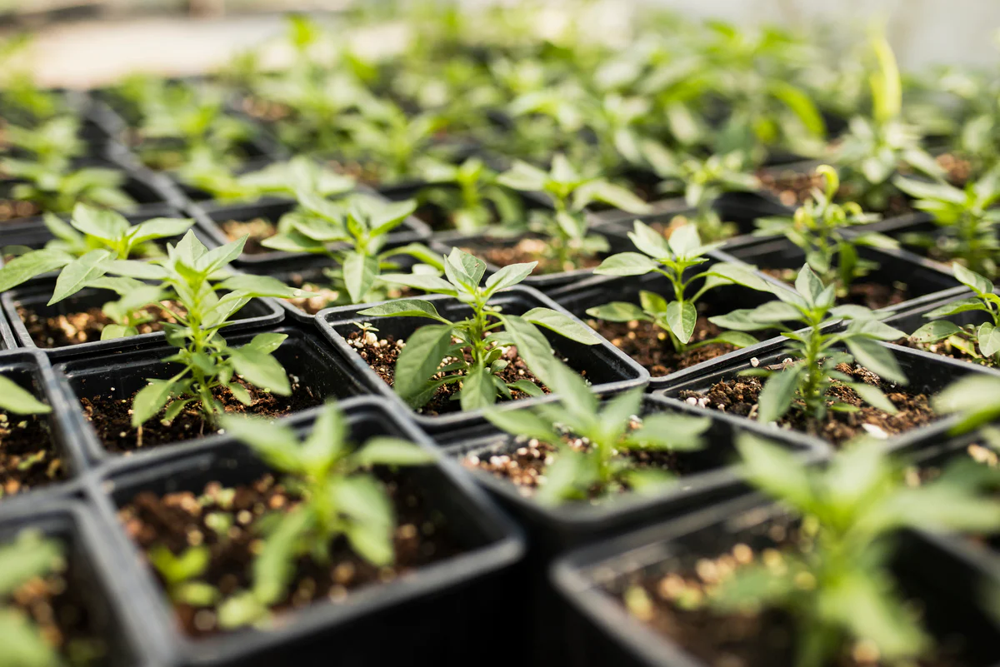
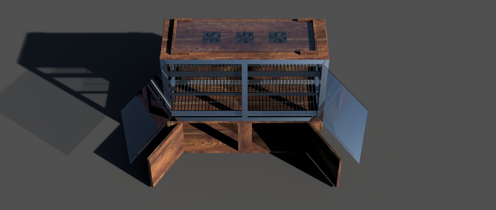

¿Qué es?

INCUBiO es una germinadora automatizada desarrollada para optimizar el crecimiento de hortalizas en Costa Rica, enfrentando el reto de aumentar su variedad y cantidad de manera eficiente. Este proyecto integra sensores de temperatura y humedad, permitiendo crear un microclima controlado ideal para cada tipo de semilla. La tecnología aplicada permite al usuario supervisar en tiempo real las condiciones de la germinadora y recibir una predicción del tiempo restante hasta que la semilla esté lista para trasplante.
Objetivos
Optimización Agrícola
Crear una germinadora inteligente con ajustes automatizados de condiciones ambientales, que potencie la eficiencia y calidad en la producción de hortalizas.
Supervisión y Control
Implementar un sistema integral de monitoreo y control que facilite la observación y análisis del crecimiento de hortalizas, adaptando el entorno para cada semilla.
Desarrollo Tecnológico
Desarrollar, validar y mejorar continuamente la tecnología de la germinadora, optimizando su diseño y la página de monitoreo para un cultivo eficiente en ambientes controlados
¿Quiénes somos?
Somos un equipo multidisciplinario apasionado por la innovación en la agricultura y comprometido con el desarrollo de soluciones tecnológicas que impulsen la eficiencia y sostenibilidad en el cultivo de hortalizas. Con una visión enfocada en mejorar la calidad de las cosechas en Costa Rica, hemos integrado conocimientos de ingeniería, diseño y tecnología para crear INCUBiO, una germinadora automatizada y controlada.
Ariel Campos (DG)

Esteban Retana (DW)

Daniela Navarro (MP)
Luis Ureña
(MP)
Abat Ocampo (MP)
Nicole Valverde (MP)
Más sobre nosotros

Nuestra Historia
El proyecto fue refinado a través de la fusión de dos iniciativas previas presentadas en la Expo STEAM 2023, lo que consolidó a INCUBiO como una solución robusta y automatizada.

Problematica
3 de cada 7 no llegan al etapa de la plantula resultando en un gran malgasto del tiempo a las personas que intentan el crecimiento de sus semillas.

Desarrollo Tecnológico
Desarrollar, validar y mejorar continuamente la tecnología de la germinadora, optimizando su diseño y la página de monitoreo para un cultivo eficiente en ambientes controlados.